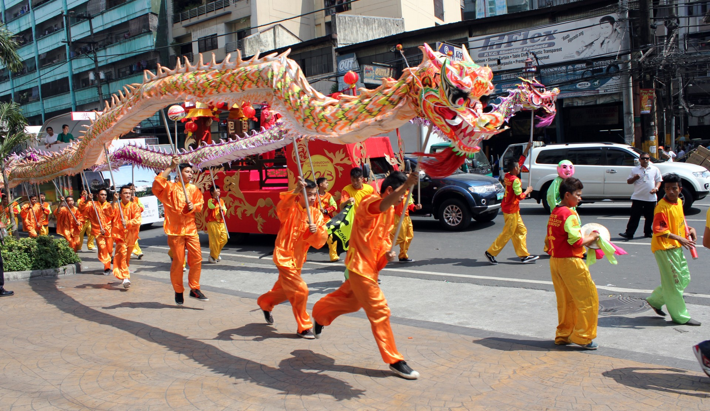
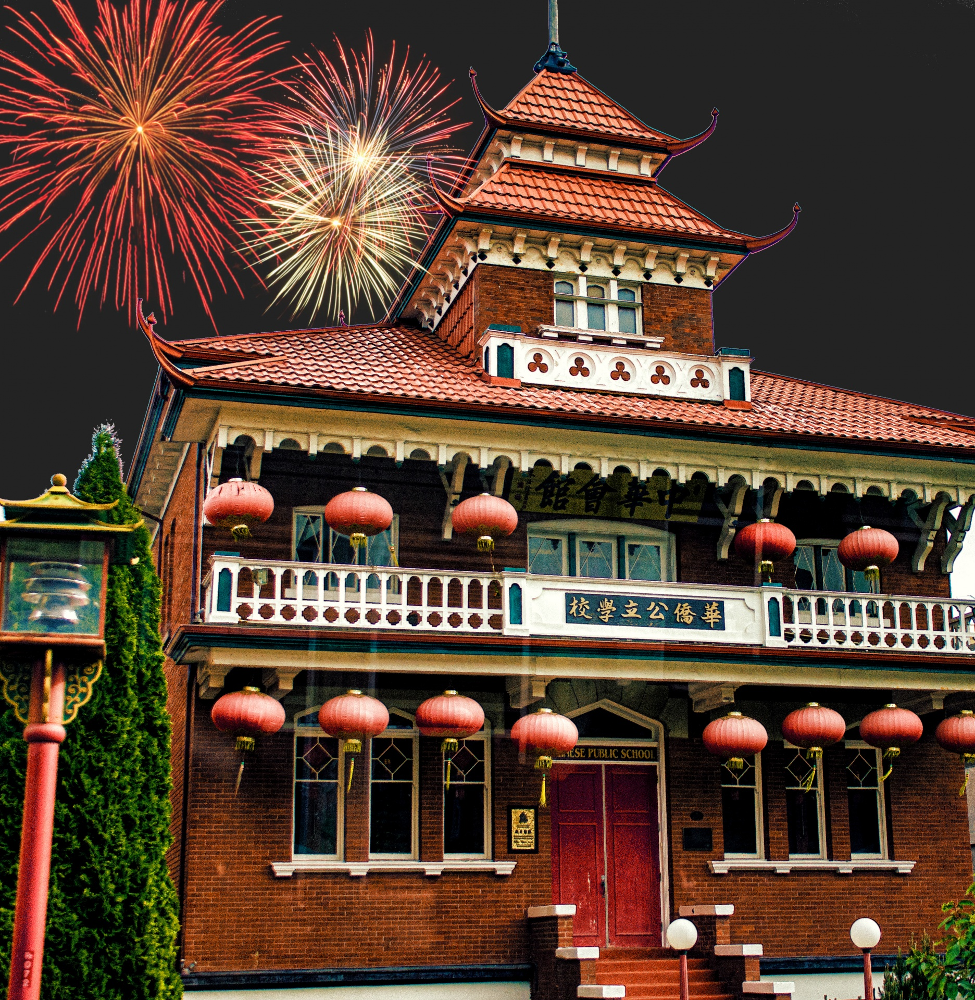

Chinese's New Year

Dragon Dance
Image by Maliz ONG

Chinese New Year Lanterns in Chinatown
Image by Suwatchai

Chinese Building And Fireworks
Image by Linnaea Mallette
Chinese New Year (also called Lunar New Year and celebrated in many countries outside China), starts on the second new moon after the winter solstice. The exact date varies from year to year, but it always falls during the winter. In China, the holiday lasts for weeks! Celebrations for Chinese New Year take all kinds of forms, from enormous public fireworks displays and exciting lion dances to special family dinners at home and giving children money in red envelopes for good luck. This vibrant, thriving holiday with ancient roots brings warmth and cheer to winter every year!